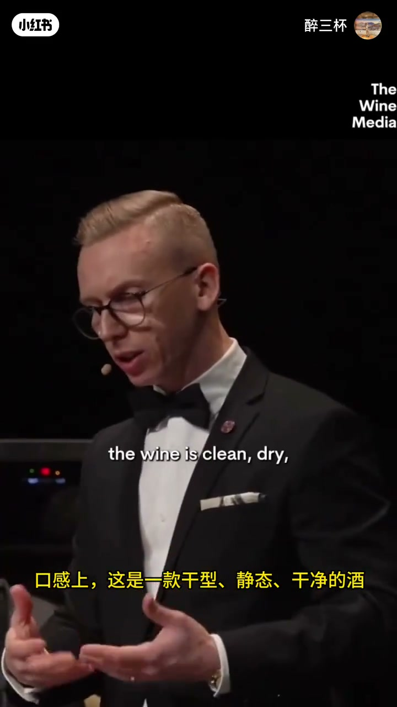
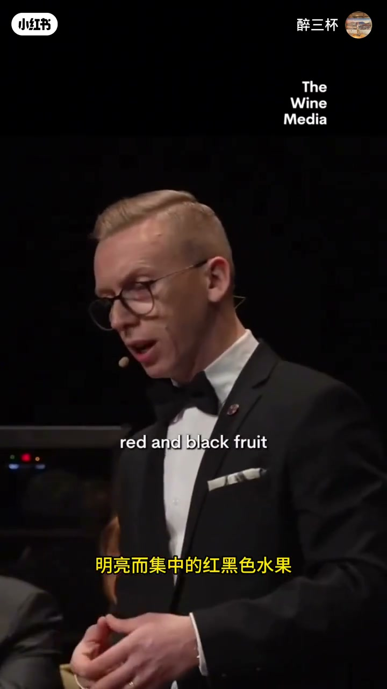
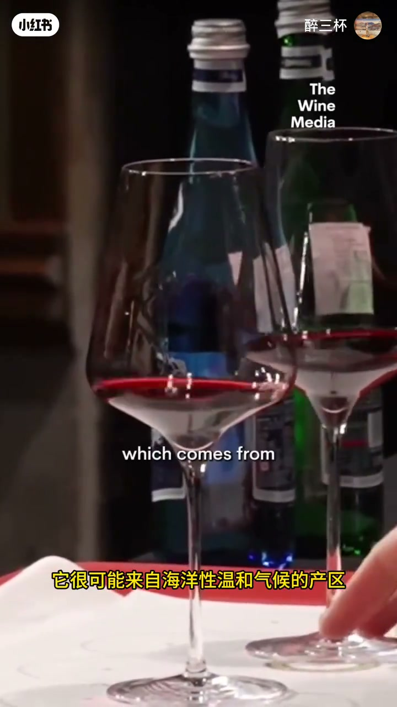
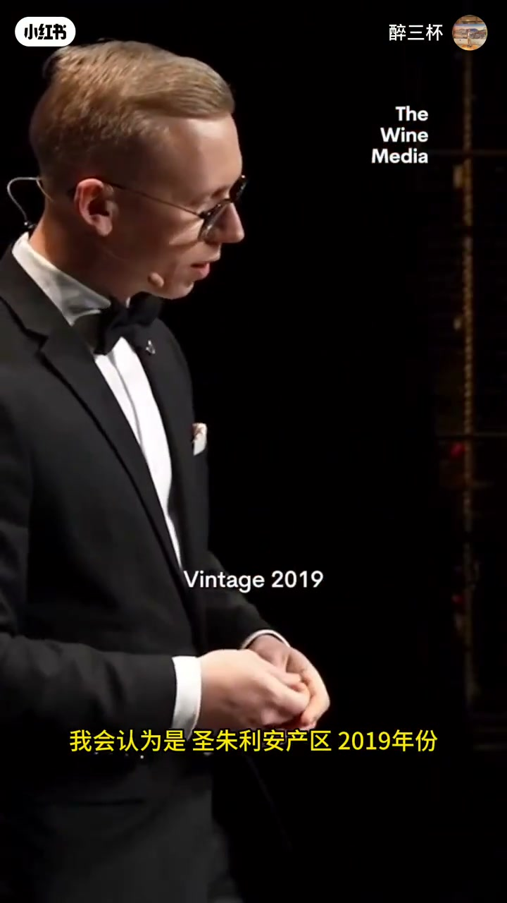

内容要点
知识结构
[00:00→00:30]
观察与酝酿
侍酒师举杯观察色泽与香气，尚未给出结论。
[00:30→00:38]
定位链条
法国波尔多→赤霞珠基调→圣朱利安→2019。
[00:38→00:42]
适饮判断
现在可饮，但仍可再陈约十年。
总结
盲品表达像填表：国家产区→品种→村镇→年份→饮用窗口，层层收敛。
图文实录
盲品观察
00:00 – 00:30
画面以举杯、观察为主，体现比赛现场的克制节奏；结论口播集中在后段。

[00:05]开场：举杯观察色泽与香气
Opening: lift the glass to observe color and aroma

[00:16]中段：仍在收集感官信息
Middle: still gathering sensory information
结论链：波尔多到圣朱利安
00:30 – 00:38
英文口播依次给出 France Bordeaux、Cabernet Sauvignon 基调、St.Julien、Vintage 2019——典型侍酒师答题模板。
France Bordeaux
It's based on Cabernet Sauvignon
I would say it's a St.Julien
Vintage 2019

[00:26]转入结论：产区与品种定位
Moving to conclusions: region and variety identification
适饮窗口
00:38 – 00:42
Drink it now but it can age for another 10 years：现在可饮与仍可陈年并不矛盾。

[00:37]收束：现在可饮，仍可再陈约十年
Close: drinkable now, but can age about another decade